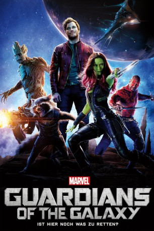

gesehen am 18.03.2015
gesehen am 18.03.2015 
 IMDB-Wertung: 8.1 / 10
IMDB-Wertung: 8.1 / 10  IMDB-TOP-Platzierung: 237
IMDB-TOP-Platzierung: 237  Metascore:
Metascore: 
Nachdem der Abenteurer Peter Quill eine geheimnisvolle Kugel gestohlen hat, wird er das Opfer einer unerbittlichen Kopfgeldjagd mit Ronan the Accuser. Die Ziele des mächtigen Bösewichts bedrohen die Sicherheit des Universums. Um dem hartnäckigen Ronan und seinen Schergen zu entgehen, ist Quill gezwungen, einen nicht gerade einfach einzuhaltenden Waffenstillstand mit einem Quartett von ungleichen Außenseitern einzugehen - dazu gehört der waffenliebende Waschbär Rocket, der Baummensch Groot, die tödliche und rätselhafte Gamora und der rachsüchtige Drax the Destroyer. Als Peter dann die wahre Macht der Kugel und dessen Bedrohung für den Kosmos bewusst wird, muss er sein Bestes geben, um die bunt zusammengewürfelten Rivalen für einen letzten, verzweifelten Widerstand zu vereinen und eine Helden-Truppe aus ihnen machen - denn das Schicksal der Galaxie steht auf dem Spiel.
Jahr: 2014
Dauer: 121 Minuten
FSK: 12
Land: USA Studio: Walt Disney Studios Motion PicturesTonspuren: DTS - ,
Untertitel: Deutsch,
Auflösung: 1080p (1920x1080) Größe: 9082 MB
Genre: Action, Abenteuer, Komödie, Sci-Fi
Regisseur: James Gunn
Drehbuch: James Gunn, Nicole Perlman, Dan Abnett, Andy Lanning, Bill Mantlo
Soundtrack: Tyler Bates
Darsteller:
Datei: X:\Comic-Filme\Guardians of the Galaxy\Guardians of the Galaxy (2014, FSK12, 1920x1080) 3D.mkv seit 21.02.2015
Festplatte: Comicverfilmungen+MusikCD
 Es gibt insgesamt 8 Filme in der Gruppe 'Comic-Filme\Guardians of the Galaxy'
Es gibt insgesamt 8 Filme in der Gruppe 'Comic-Filme\Guardians of the Galaxy'